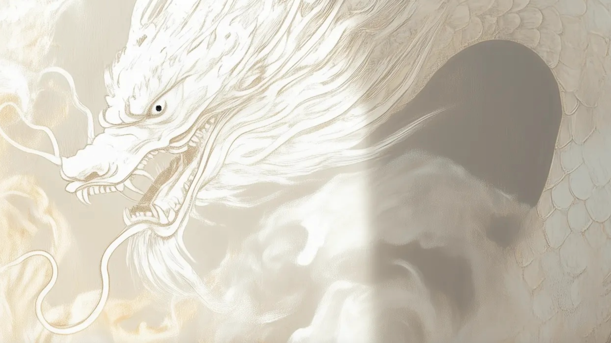

画 龙 点 睛
by Miuyun • 图片由 Midjourney 生成
场景一：静止的白龙
提示词：
- Chinese master painter in traditional Song dynasty robe
- Inside ancient Buddhist temple
- Painting massive white dragons on wall
- Dragons without eyes
- Ethereal atmosphere
- Soft natural light through temple windows
- Amazed monks watching
- Detailed brushwork
- Cinematic composition
参数设置： --ar 16:9 --style raw --personalize thrtdgi --v 6.1
宋代寺庙中，画师正在墙上绘制巨大的白龙。龙的眼睛尚未点上， 通过寺庙窗户透入的自然光营造出空灵的氛围，周围的僧人正在惊叹地观看。
场景二：点睛之时
提示词：
- The white dragon have a black ink eye
- White smoke fills the scene
- Creating a cinematic feel
- Rendered using a high-resolution C4D OC renderer
参数设置： --ar 16:9 --style raw --personalize thrtdgi --v 6.1

通过 Midjourney Editor 放大重绘，为白龙添加了墨色的眼睛。 场景中弥漫的白烟增添了电影感，高分辨率渲染使画面更加细腻。
场景三：腾龙升天
提示词：
- Golden Dragon Scale
- Reality
- Chinese ancient fairy
参数设置： --ar 16:9 --style raw --personalize thrtdgi --v 6.1

通过材质更换，为龙鳞添加了金色质感，使龙的形象更加真实立体， 呈现出腾龙欲飞的瞬间，保持了中国古代神话的玄幻氛围。
这三个场景将作为分镜，用于后续视频制作